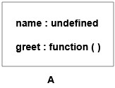
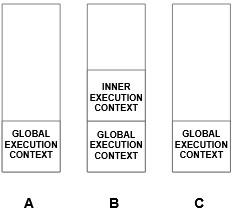

22/12/2020
You can run your JavaScript code either inside a browser or inside Node (it's a JavaScript environment that enables you to use JavaScript outside the browser).
Different browsers have their JavaScript engine for example Chrome has V8, Mozilla has Spider Monkey, etc.
For Node the engine is built on top of V8.
These JavaScript engines are the one that reads and executes your JavaScript code.
Let's see how the JavaScript engine executes your code using execution context.
Everything in JavaScript happens inside an execution context.
It is just a container where all your code is executed.
There are two phases that take place in the execution context.
The memory creation or allocation phase.
The code execution phase.
In this phase, the JavaScript engine goes through your code and allocates some memory for all the variables and functions.
The variables will have a placeholder value called undefined.
Value assignment, function calls, etc will not take place in this phase.
In this phase, the JavaScript engine reads your code line by line and assigns the values for the variables, and executes the function calls.
When a function call is encountered a brand new execution context is created inside the current execution context.
Note that the first execution context that is created is also called as global execution context.
Now we have a separate execution context for a function call inside our global execution context.
Again the memory allocation and code execution phase will take place but now it takes place for the particular function call.
Once the function execution is over the execution context for that particular function gets deleted along with all the variables and other function calls inside it.
Since our code can have a lot of function calls there will be a lot of execution contexts created.
The order in which the execution context should be created and deleted is taken care of by the call stack.
Note that stack is a linear data structure where you can add or remove elements only at the top of the stack.
Initially, the global execution context is pushed onto the stack.
Then whenever execution context for a function call is created, it will be pushed on top of the global execution context in the call stack.
When the function execution is finished the particular execution context will be removed from the call stack.
var name="John";
function greet(){
var surname="Smith";
console.log(`Hello ${name} ${surname}`);
}
greet(); // Hello John Smith

A shows the state of the global execution context after the memory allocation phase of the program.
The image B shows the state of the global execution context during the code execution phase of the program.
During this phase another execution context for the greet function is created inside the global execution context and the memory allocation phase of the inner execution context takes place.

The image C shows the state of the global execution context after the code execution is done for the inner execution context.
During this time the output Hello John Smith is logged on the console.

The image D shows the state of the global execution context
after the inner execution context is deleted as the greet function is done with its execution.
Let us see how the call stack changes for the above program.

Initially, the global execution context is pushed on the call stack.
After the function call, the inner execution context is created and pushed on top of the global execution context.
Once the function execution gets over the inner execution context is removed from the call stack.
After understanding how JavaScript code execution takes place, now we can easily understand hoisting.
Hoisting is the concept where we can access the variables and function even before we have declared them.
Let's see how it works based on what we have learned before.
When we try to access a variable or a function we will be in the code execution phase by that time the memory would have been already allocated right?
It is because the memory allocation phase comes before code execution.
Now since the memory is already allocated for all the variables and functions, if you try to access them before declaration (in your code) the variables will have a value of undefined and the function calls would be executed normally.
This is what hoisting is all about. Now let us see some examples to understand hoisting better.
There are three ways to create variables var, let, and const.
Variables created using var, let, and const all are hoisted but you will be able to access only the variable created using var before declaration.
console.log(name); // undefined
var name="John";
console.log(name); // ReferenceError: Cannot access 'name' before initialization
let name = "John";
console.log(name); // ReferenceError: Cannot access 'name' before initialization
const name = "John";
In the above code the variables are created using let and const, they will be hoisted but you will not be able to access them before declaration.
These variables are said to be in the temporal dead zone (it is the time between hoisting of the variable and its initialization).
During this zone you will not be able to access the variables.
Simply put you will be able to access the variables created using let and const only after initialization.
Refer this mdn doc to know more about the temporal dead zone.
There are two types of function, regular and arrow function.
Only the regular functions are hoisted, arrow functions will not be hoisted.
greet() // Hello there
function greet(){
console.log("Hello there");
}
greet() // TypeError: greet is not a function
var greet=()=>{
console.log("Hello there");
}
In the above code the greet is an arrow function and it is stored in a variable.
After the memory allocation phase the variable greet will have a value of undefined so when you try to access it before declaration you will get a type error.
Note that if you use let or const for arrow function the same output will be produced.
JavaScript engine reads and executes your JavaScript code.
Everything in JavaScript takes place in an execution context.
There are two phases that take place in the execution context the memory allocation followed by the code execution.
Every function call will create another brand new execution context.
The order of creation and deletion of execution contexts is taken care by the call stack.
Hoisting is the ability to access variables and functions even before declaration (in your code).
Hoisting is possible because the memory allocation phase would have been completed by the time the code is being executed.
Only those variables created using var is accessible before declaration, variables created using let and const are not accessible in the temporal dead zone.
Only regular functions are hoisted, arrow functions are not hoisted.
In general, you should access variables and functions only after declaring them to avoid any errors.